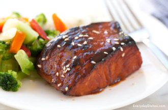

Description
Simple marinated salmon using the asian style sauce as a marinade.
Ingredients
Instructions
- Preheat oven to 425°F
- Cut 400g of salmon fillets into cubes.
- Prepare the asian style sauce in a medium-sized bowl
- Place cubed salmon into the bowl, making sure all pieces are submerged
- Cover top of bowl with plastic wrap and place in the fridge for 30 minutes
- Remove from fridge, line a baking sheet with parchment paper, and place cubed salmon, spacing out as well as possible
- Bake for 8-10 minutes
- Finish for 2 minutes under the broiler on high
- Serve with avocado, kewpie mayo, siracha, half-cauliflower-half-white-rice, and furikake seasoning.